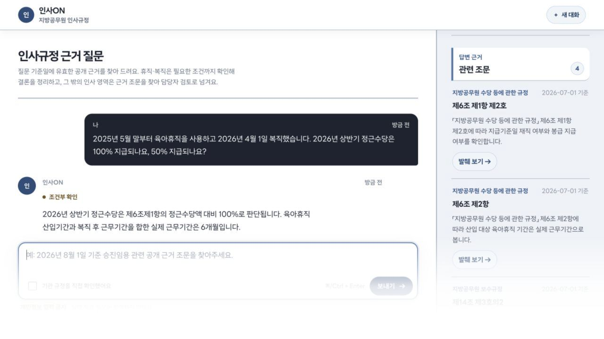

PRODUCTION인사ON → PDF-to-Bot MCP
공무원 인사 법령 RAG 챗봇 — 사내 데이터 챗봇의 검색·근거·안전 구조를, 실제 내부자료 없이 공개 법령 corpus로 먼저 검증했습니다. 검증한 검색 계층은 PDF-to-Bot MCP로 범용화했습니다.
636tests
B0→H3ablation
70건합성 회귀셋
USER
“2025년 5월 말부터 육아휴직을 사용하고 2026년 4월 1일 복직했습니다. 2026년 상반기 정근수당은 100% 지급되나요, 50% 지급되나요?”
인사ON
실제 근무 6개월로 100% 지급 — 근거: 제6조·제14조. 조건이 부족하면 재질문하고, 근거가 부족하면 답변을 중단합니다.
한계 공개: 법률 정답성·실사용자 효과는 아직 측정하지 않았습니다. 로컬 추론 p50 62.9초.